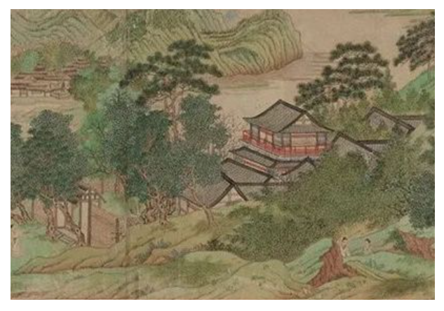
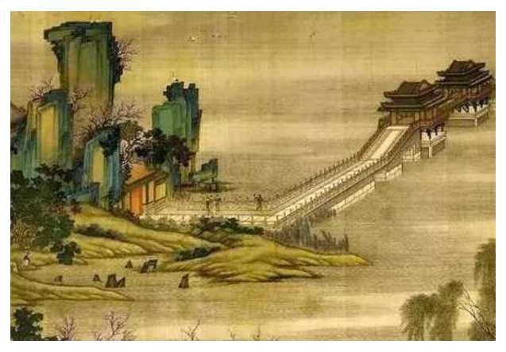
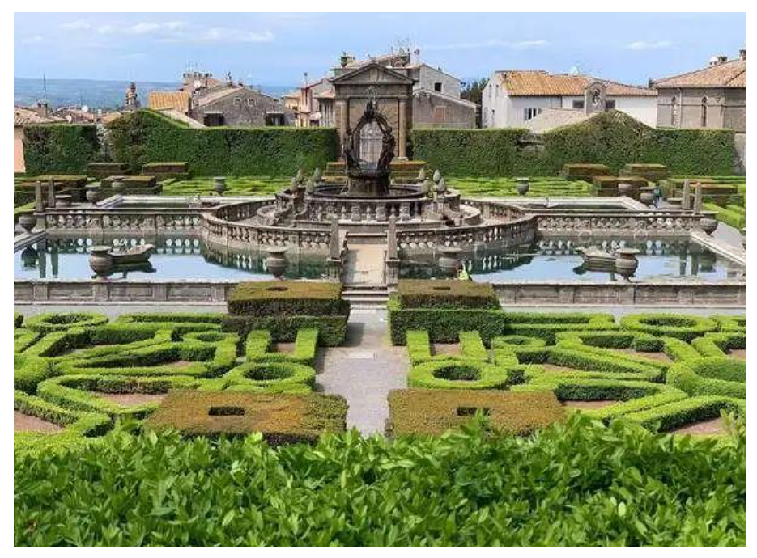
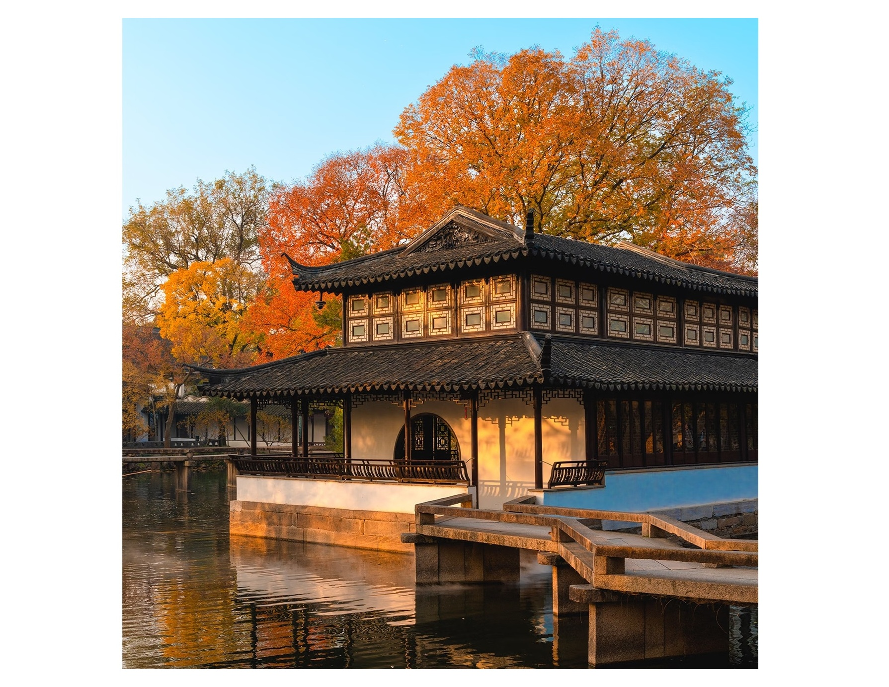
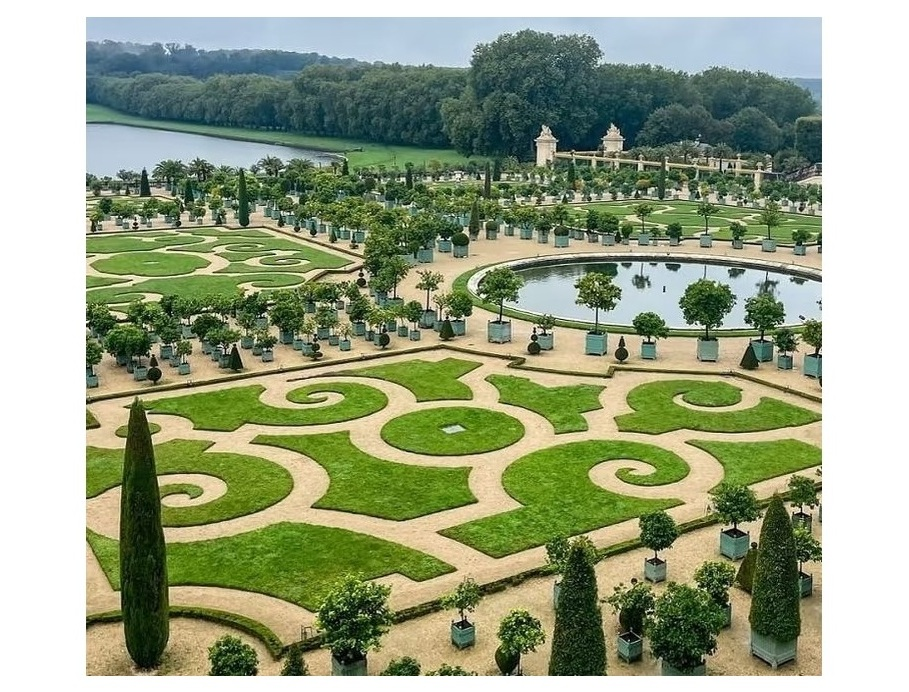
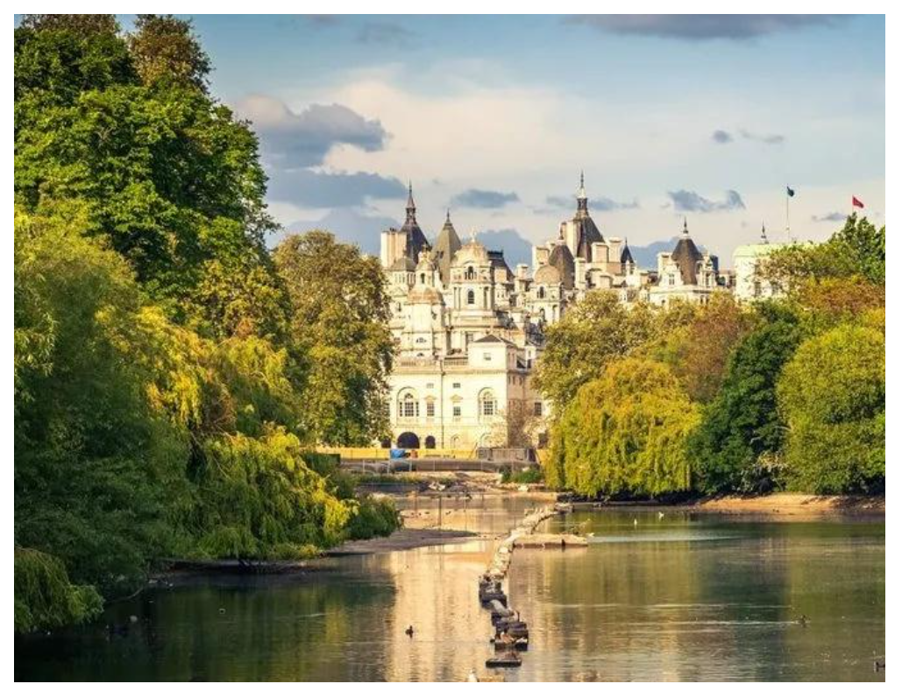

魏晋南北朝
中国：山水园萌芽

乱世中文人寄情山水，山水画独立成画。园林开始脱离单纯狩猎游乐，转向表达山水意境，奠定写意造园思想。
唐宋
中国：文人园林兴盛

山水画艺术达到顶峰，诗画入园成为潮流。文人参与造园，追求意境，是后世江南园林的思想源头。
16世纪 文艺复兴
西方：意大利台地园

透视绘画理论成熟。台地园林依山而建，层层退台，利用透视强化纵深感，代表作品：埃斯特庄园。
17世纪 明清
中国：江南园林鼎盛

《园冶》刊行，造园理论体系完成。拙政园、留园陆续建成。框景、借景、对景手法成熟，园林成为可游览的立体山水画。
17世纪 法国
西方：凡尔赛花园

古典主义园林巅峰作品。严格中轴线透视构图，在大地绘制宏大几何图景，大量版画记录园林风貌。
18世纪
英国风景园

受到中国园林绘画美学的启发，抛弃几何整形园林，模仿自然起伏的风景，西方园林审美发生重大转向。